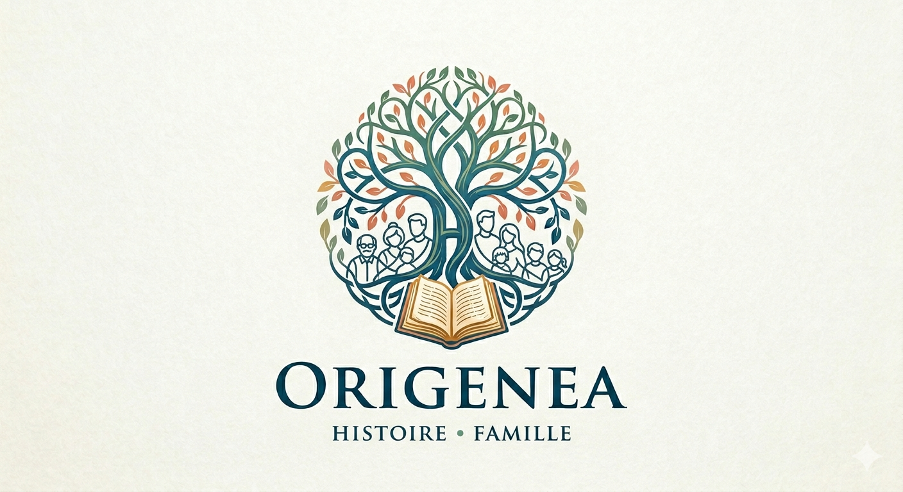

Derrière chaque nom se cache une vie, un lieu, une époque. J'explore les archives pour reconstituer votre ascendance et transmettre, aux générations suivantes, la mémoire des vôtres.

« Comprendre d'où l'on vient, c'est mieux savoir qui l'on est. Mon métier consiste à redonner un visage et une histoire à des noms parfois oubliés. »
Je suis Catherine Fougeray-Imbrechts, généalogiste à Libourne. Patiemment, document après document, je remonte le temps avec vous — registres paroissiaux, actes notariés, recensements, cadastre — pour bâtir un récit fiable, sourcé et transmissible.
Recherches ascendantes en ligne agnatique (paternelle) ou cognatique (maternelle), et reconstitution du parcours d'un ancêtre.
L'histoire d'un bâtiment ou d'une propriété, et l'identification des propriétaires successifs à travers les siècles.
Un appui fiable pour notaires et généalogistes successoraux : recherches d'héritiers et reconstitution de dévolutions.
Nous définissons ensemble votre objectif, ce que vous savez déjà et ce que vous souhaitez transmettre.
Dépouillement des registres, actes et fonds publics — sur place en Gironde et en ligne.
Chaque information est vérifiée, datée et sourcée pour garantir la fiabilité du récit.
Vous recevez un arbre, une synthèse et les copies d'actes, prêts à partager en famille.
Catherine a retrouvé la trace de mon arrière-grand-père, parti d'un village du Libournais en 1889. Lire son acte de mariage, c'était comme lui serrer la main.
Tonneliers, gabariers, vignerons : ces professions disparues racontent la vie quotidienne au bord de la Dordogne.
Premier billet du Challenge AZ : les bons réflexes pour ouvrir une enquête généalogique sans se perdre.
Abréviations, formules latines, graphies surprenantes : petit guide pour apprivoiser la paléographie.
Confiez-moi un nom, une date, une vieille photo. Le premier échange est sans engagement — racontez-moi ce que vous cherchez.